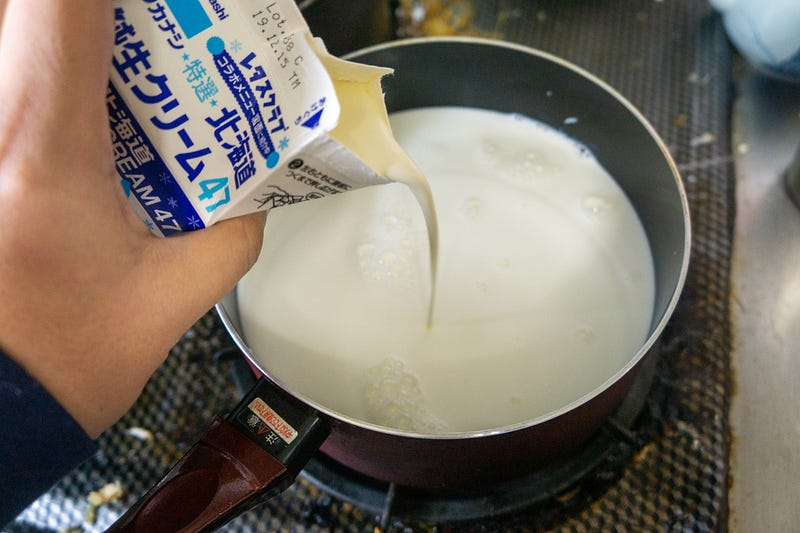
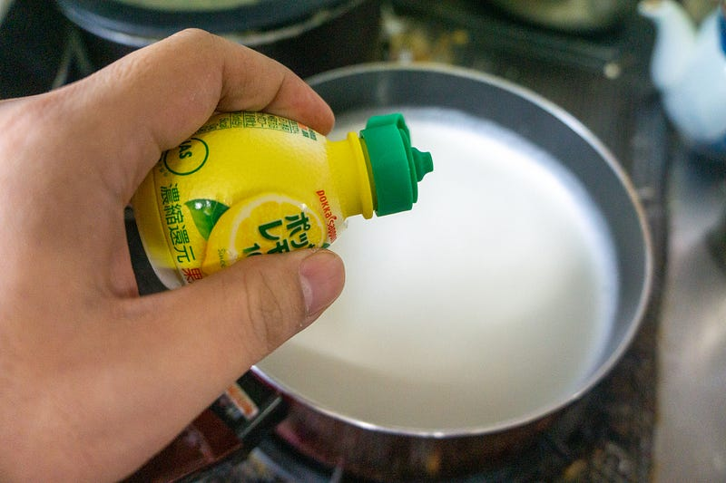
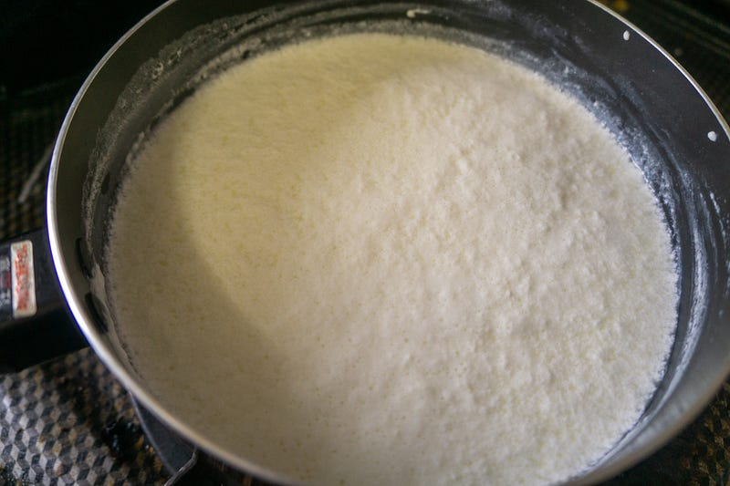
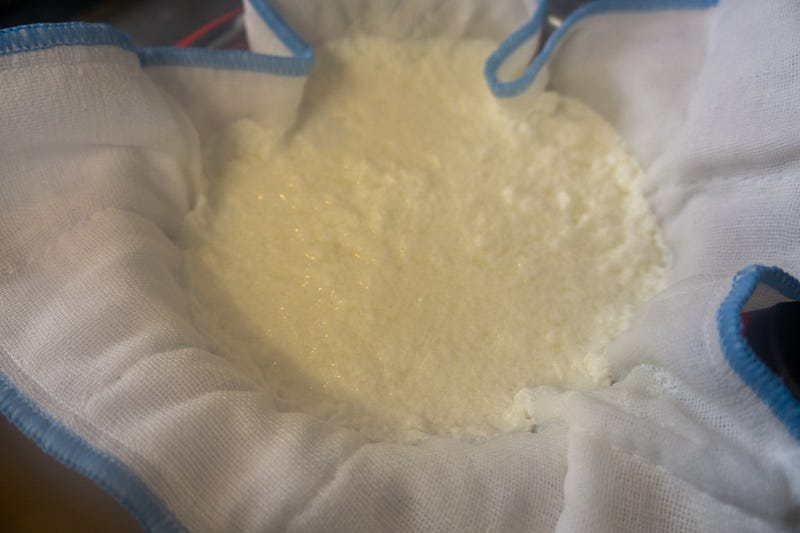
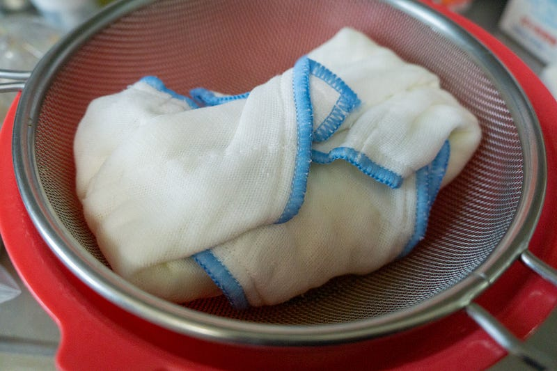
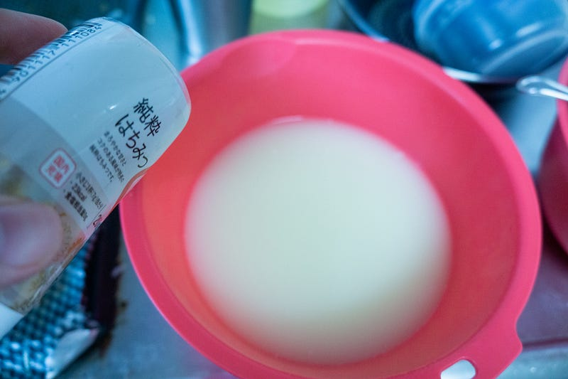
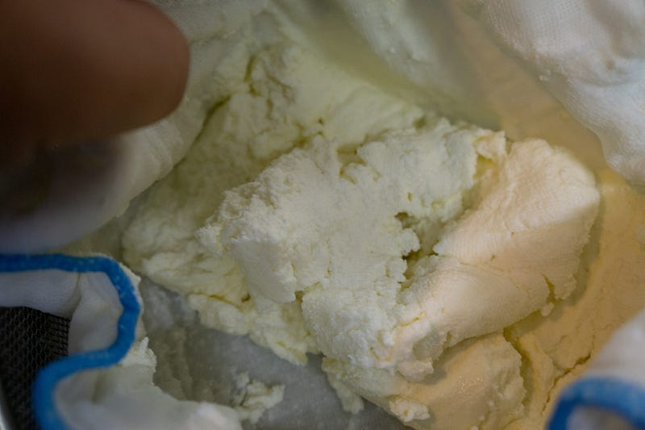
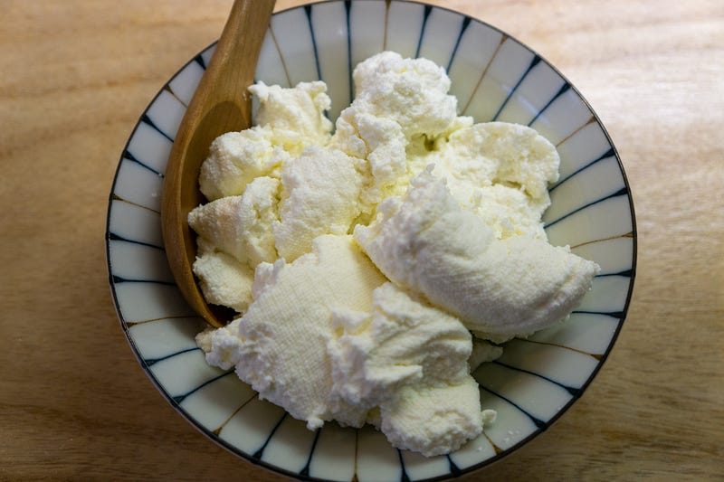
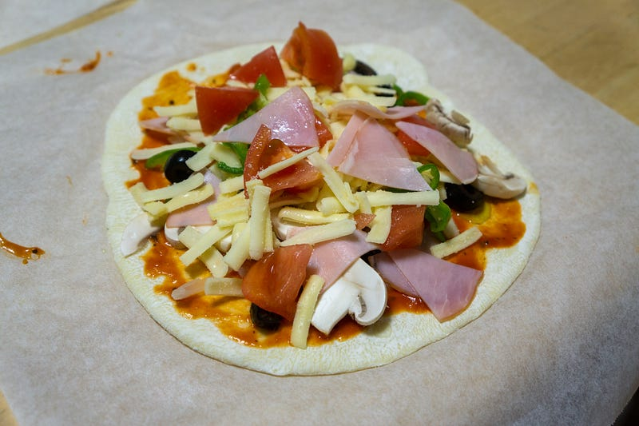
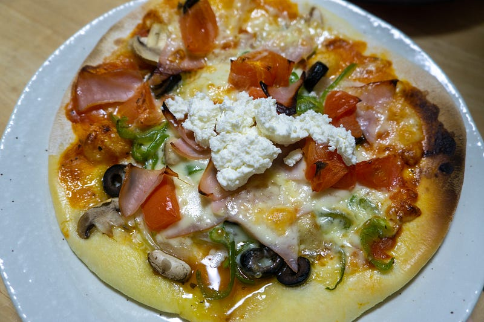

自家製フレッシュチーズを作る
自家製フレッシュチーズを作る
今回は自家製フレッシュチーズを作ってみた。イメージはリコッタチーズなんだけど、厳密に言うと製法が違うらしいのでここでは熟成等一切させない「フレッシュチーズ」を作った、ということにしておく。
最近、チーズスタンドなどでおいしいフレッシュチーズが食べられるようになったけど、気軽にさくっと食べたいのでこの際自分で作れるようになろうと思い作ってみた。
約1リットルのミルクを用意して、そこに生クリームと塩を少々いれて、加熱する。塩味はわりと少なめでも大丈夫だけど、ちゃんとチーズっぽくするにはある程度塩味がしないと、というのはあるのでそのあたりは加減しましょう。

やさしくかき回しながら加熱していくと、鍋の真ん中あたりに細かい泡が出始めるので、そこから弱火。弱火にしたら、スプーン一杯ずつレモン汁を加えて、優しくかき混ぜていく。

元のレシピにはレモン汁おおさじ3杯とありましたけど、自分がやった時は4杯目を入れたくらいではっきりとホエー（乳清）とチーズが分離するのが目視できた。
乳清は、 チーズを作る際に固形物と分離された副産物として大量に作られる。また、 ヨーグルトを静かに放置しておくと上部に液体が溜まることがあるが、これも乳清である。なお、固形物成分は カード(curd ）と呼ばれる。…ja.wikipedia.org

その時点で火は止め、10分ほどチーズが落ち着くのを待つ。そのあと、ざるの上にふきんを載せ、その下にボウルを置いて、そこに少しずつチーズとホエーを入れていく。

これを2時間ほどこのまま放置。

その間にホエーをどうにかする。

上記レシピにホエーに蜂蜜を入れてもおいしいということなので、蜂蜜と味を調整するための砂糖をちょっと入れて、おやつに子供達と飲んだ。塩味が気になるかとおもって甘さを強めにしてみたけど、もう少し甘みを抑えてもよかったかもしれない。

時間がたって、だいたい水気がぬけたらチーズをふきんから取り出して、チーズはこれでできあがり。牛乳の甘み、うっすら塩味。おいしい… 子供にも大人気。

物の本によるとこれからさらに水気を切るとインド料理パラク・パニール（青菜とチーズのカレー）のパニールになるそうな。いつかそちらもやってみたいと思う。
さて、このチーズはこのまま食べてもおいしいし、実は醤油を少しかけて食べてもすごくいいんだけど、本日は子供らと一緒に手作りピザを作ったので…

こいつを焼いて、やきあがったところでチーズをえい！

熱いピザと冷たいチーズ… いいですね… 最高です。
というわけで自家製フレッシュチーズ、簡単だしおいしいのでチーズ好きは是非どうぞ！